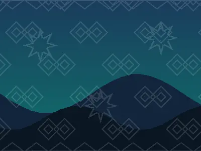
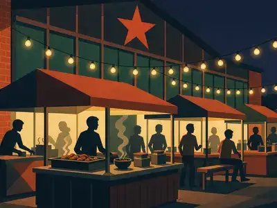
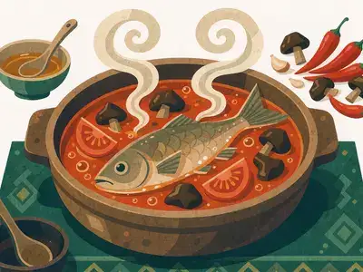

在中秋夜的西江，看万家灯火亮成星河
东引观景台 19:30 灯全亮，人不算挤，拍照记得带广角……
万家灯火 · 东引观景台
凯里市郊 · 车程约 40 分钟拦门酒十二道 · 原生态苗寨
凯里西 · 车程约 30 分钟清水江畔 · 阳明书院

雷山县 · 小众秘境云海梯田 · 静谧村落

贵阳 · 夜生活地标老厂区改造 · 烟火气拉满

番茄发酵红酸汤 + 稻花鱼，蘸水才是灵魂
黄牛肉切薄片，酸汤一烫即熟
早晨来一份糯米饭团，配腊肉酸萝卜
评论区联名推荐，"直接干三碗饭"
"出了凯里没得吃"系列，本地限定
解辣神器，走街串巷随手来一杯
东引观景台 19:30 灯全亮，人不算挤，拍照记得带广角……
郎德上寨 11 点开寨，牛角杯千万别用手接，不然要喝完……
没有明星，全是本地叔叔阿姨，氛围比大秀还炸……
包车 / 拼车 / 苗寨民宿，在线咨询本地向导